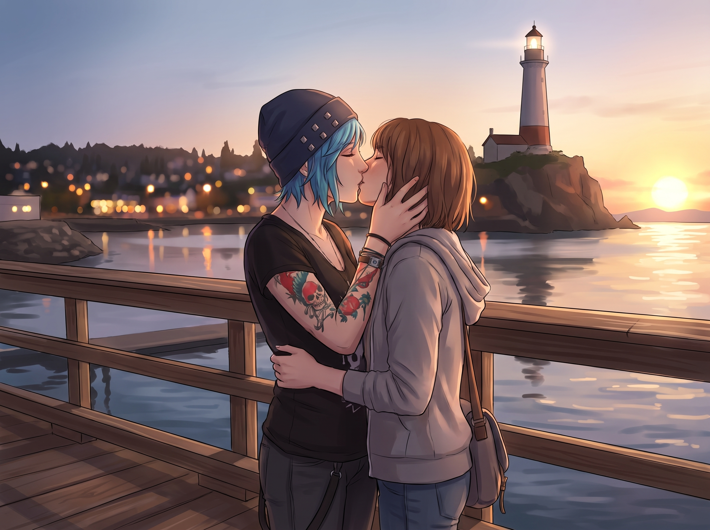

重返阿卡迪亞灣

盛夏的某個週四晚上，工坊剛打烊，Chloe 窩在沙發上，一邊啃著蘋果一邊撥通了雙鯨餐廳的電話，跟 Joyce 東拉西扯地聊起了近況——工坊的留聲機修復生意、Max 的攝影展、還有她自己終於補考通過的材料力學。
電話那頭，Joyce 的聲音帶著剛出爐蘋果派的甜香，一邊抱怨著繼父 David 最近在後院修籬笆時又扭到了老腰，一邊聽得津津有味。聊到興頭上，Chloe 索性把電話塞給湊過來聽的 Max，讓她也跟 Joyce 說了幾句火車工坊的照片和最近的生活。
「Maxine，親愛的，」Joyce 笑著說道，「你們那輛老雪佛蘭皮卡……還能跑長途嗎？我和 David 的客房一直空著呢。」
Max 和 Chloe 對視一眼，幾乎是異口同聲地應了下來。
就這樣，在一個萬里無雲的週五清晨，Chloe 載著 Max，沿著一號公路一路向南，時隔大半年，再次回到了這座海風微鹹的小鎮。
一、繼父的軍事級雷達
老雪佛蘭皮卡「轟隆隆」地停在熟悉的小洋房門口。
David 穿著他那件萬年不變的軍綠色戰術襯衫，手裡拿著一把園藝剪，原本嚴肅緊繃的臉在看到兩個女孩跳下車時微微鬆動了一下。但很快，退伍軍人的「戰術直覺雷達」就開始瘋狂發出尖銳警報。
Chloe 剛熄火，就極其自然地傾身過去，幫 Max 解開卡住的副駕駛安全帶，順手用指腹蹭掉了 Max 鼻尖上沾著的相機鏡頭灰塵。下車搬行李時，Max 幾乎是本能地把最沉的那個裝滿暗房藥水的工具箱搶過來抱在懷裡，而 Chloe 則長臂一撈，直接把 Max 連人帶箱子半摟進懷裡強行奪走。
David 站在門口，拿著園藝剪的手僵在半空中。走進客廳放下箱子時，他走到水槽邊猛灌了一大口涼水，藉著擦眼鏡的動作，對著正在切烤牛肉的 Joyce 壓低聲音、神色極其凝重地進行「戰情匯報」：
「Joyce……情況有些不對勁。她們兩個……肢體間距小於十五公分，戰術協同親密度達到 98%。」
Joyce 只是繫著圍裙，溫柔地白了他一眼，嘴角帶著看穿一切的母性微笑：「得了吧，David，把你的雷達關掉，去把客房的大床換上新洗的薰衣草床單。」
二、媽媽的溫馨暴擊
週六晚上，吃完了一頓無比豐盛的雙鯨特製烤牛肉與藍莓派後，四個人圍坐在客廳看電視。
晚上十點，Max 伸了個懶腰準備上樓洗澡，Chloe 也打著哈欠站起來。
這時，Joyce 端著兩杯溫熱的蜂蜜牛奶走過來，臉上掛著無比慈祥且溫暖的笑容，聲音不大不小卻足以讓整個客廳聽得一清二楚地開口：
「姑娘們，今晚客房開了暖氣。對了，床頭櫃第二個抽屜裡，我放了新買的乳膠枕……還有兩盒草莓味的安全防護用品，以及一瓶水溶性植物潤滑乳。」
沙發另一頭正在喝茶的 David 當場一口茶水全噴在了面前的雜誌上，劇烈咳嗽得彷彿肺部中彈。
Max 的整張臉以光速「轟」地一聲炸成了熟透的番茄，語無倫次得像個短路的機器人：「媽、媽媽？！我們只是……單純的閉上眼睛睡覺！！」
而 Chloe 此刻整個人僵硬得像一根剛出爐的鐵軌，耳根紅得能滴出血來：「Joyce！！老天啊！！妳到底在幹嘛啊？！」
Joyce 卻依舊優雅而溫柔，伸手拍了拍 Chloe 通紅的臉蛋：「好啦，都是二十歲的大人了，有什麼好害羞的？女孩子之間也是要講究科學防護的，懂嗎？尤其是 Chloe，妳平時手勁那麼大，不准欺負 Maxine。」
「Joyce Madsen！！！」Chloe 抓狂地抱住腦袋，發出了一聲響徹阿卡迪亞灣夜空的絕望哀嚎。
三、墓前的問候
拜訪完墓園的那個傍晚，阿卡迪亞灣的天空被落日染成了一片溫柔的金紫相間的晚霞。
這已經不是她們第一次回來看看了，心情反而帶著一種久違老友重逢般的輕鬆自在。在 William 的墓前，Chloe 蹲下身，隨手放了一枚親手打磨得泛著光澤的黃銅小齒輪，像是在跟老爸嘮家常：「爸，猜猜看，我現在也算是個像模像樣的工匠了，你要是還在，肯定會唸叨著要來我車間看看。」
在 Rachel 的墓碑旁，Max 也蹲下來，留下一束 Kate 親手採摘並用亞麻線捆好的乾迷迭香與洋甘菊，輕聲說了幾句波特蘭這陣子的近況——工坊開張了、Max的攝影展拿了最高榮譽、Chloe終於補考過了材料力學。
風聲與海浪聲交織，沒有沉重的儀式感，只有兩個女孩坐在草地上，像跟老朋友分享近況一樣，安靜地待了一會兒。
隨後，老雪佛蘭皮卡沿著那條熟悉的泥土小徑，緩緩開上了那座矗立在海崖頂端的白色燈塔。
四、燈塔的蛻變
當熄火的引擎聲停止，海風迎面撲來的剎那，兩人的身體依然不可避免地出現了短暫的本能應激反饋。
Max 走下車踩在乾燥的草地上時，呼吸不由自主地微微一滯。眼前的懸崖與海平線在腦海裡短暫地疊上了另一重畫面——那個曾經無數次在噩夢裡重演的分岔路口：一邊是被龍捲風徹底撕碎的阿卡迪亞灣，一邊是倒在 Blackwell 女廁冰冷磁磚上、再也沒有醒來的 Chloe。她的手指下意識地抓緊了相機帶，掌心泛起一層薄薄的冷汗。
Chloe 的腳步也在距離那張熟悉的老木長椅五步遠的地方停住了。她的目光落在斑駁的白漆塔身，指尖微微顫抖了一下——那些關於「被全世界拋棄、獨自面對終結」的記憶碎片，在這一瞬間又一次尖銳地浮現。
但這一次，幻覺只停留了不到三秒。
一隻粗糙、帶著金屬打磨薄繭與薄荷糖溫度的大手，毫不猶豫地伸過來，十指緊扣，穩穩地包裹住了 Max 冰涼的手指。
「我在這裡，Maxine。」Chloe 的聲音低沉、沙啞，卻比任何時候都要真實厚重。
兩人在懸崖邊那張重新漆過防腐木油的老長椅上並肩坐下。Chloe 把皮夾克展開披在兩人的肩膀上。
「以前每次站在這裡，我都覺得整座小鎮都在把我往下推，」Chloe 望著腳下緩緩拍打著黑色礁石的白色浪花，嘴角勾起一抹極其少見的寧靜微笑，「但現在坐在這裡……我只覺得這裡的海風很舒服，夕陽很漂亮。而且——老娘身邊坐著全宇宙最好的女孩。」
Max 抿著嘴笑了起來，伸手環抱住了 Chloe 的腰：「這裡不再是終點了，Chloe。它現在只是我們在波特蘭開累了車、隨時可以回來看海的燈塔而已。」
太陽漸漸沉入太平洋的水平面之下，白色燈塔頂端的巨大透鏡「嗡」的一聲輕響，亮起了一道旋轉的溫暖金光。
Chloe 低頭吻了上來，帶著薄荷糖的甜味與海風的鹹澀，緩慢而篤定。
等兩人終於分開，Max 有些氣喘地靠在她肩上，笑著伸手從包裡摸出那台機械相機，將鏡頭對準了眼前燈塔的光柱與翻湧的晚霞——
「咔嚓。」
快門聲清脆地響起，將夕陽與燈塔的微光定格了下來，而那個吻，早已經被兩人各自的心跳，永遠地記住了。
傷痛沒有被遺忘，但它已經被時光、愛與彼此的存在，徹底淬煉成了守護她們前行的錨。